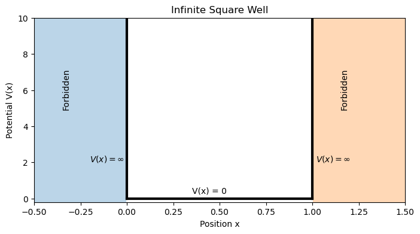
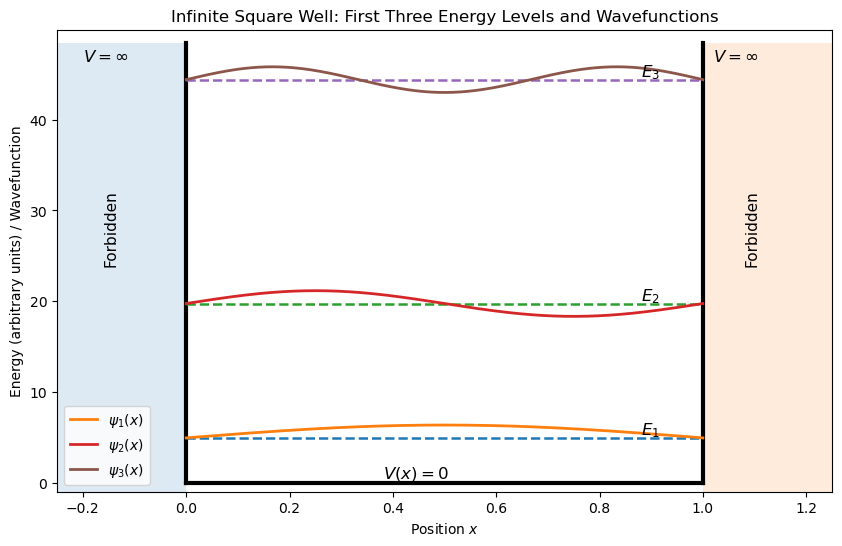
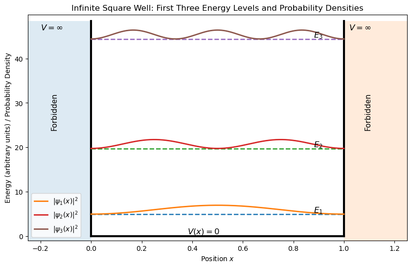

A4.4 — The Infinite Square Well (Particle in a Box)#
Motivation#
Now that we have introduced the time-independent Schrödinger equation
we can begin solving it for specific physical systems.
The simplest and most important example is the infinite square well, often called the particle in a box. In this model, a particle is confined to a finite region of space by walls that it cannot penetrate.
Although this model is idealized, it reveals several profound features of quantum mechanics:
Energy levels become quantized
A confined particle cannot have zero energy
Wavefunctions form standing waves
Probability distributions differ from classical expectations
The infinite square well therefore provides our first explicit solution of the Schrödinger equation and illustrates how quantization naturally emerges from boundary conditions.
The Potential#
In the infinite square well, the particle is confined between two walls separated by a distance \(L\).
The potential energy is defined as
This means
the particle moves freely inside the box
the particle cannot exist outside the box
Therefore the wavefunction must satisfy
These are the boundary conditions imposed by the infinite walls.

Schrödinger Equation Inside the Box#
Inside the box the potential is zero:
The time-independent Schrödinger equation becomes
Rearranging,
where
This differential equation has the general solution
Applying Boundary Conditions#
Apply the first boundary condition
Substitute \(x=0\)
Thus
so the wavefunction becomes
Now apply the second boundary condition
which gives
For a non-zero wavefunction,
This occurs when
where
Thus
Quantized Energy Levels#
Recall
Substituting \(k=\frac{n\pi}{L}\) gives
These are the allowed energy levels of the particle in the box.
Energy is therefore quantized.
Definition — Energy Levels in an Infinite Square Well
The allowed energies of a particle confined in a box of width \(L\) are
The corresponding wavefunctions are
Each value of \(n\) corresponds to a different quantum state.
Box Activity 1 — Normalizing the Wavefunction
Inside the infinite square well \(0<x<L\), one possible solution to the Schrödinger equation is
where \(A\) is a constant.
However, a physically valid wavefunction must satisfy the normalization condition
Substitute the wavefunction into the normalization condition.
Evaluate the integral.
Solve for the normalization constant \(A\).
Solution
The normalization condition is
Substitute
Thus
Factor out \(A^2\):
Using the identity for this integral,
we obtain
Solving for \(A\):
Taking the positive root,
Therefore the normalized wavefunctions for the infinite square well are
Insight — Zero-Point Energy
The lowest energy corresponds to
so
Notice that the particle cannot have zero energy.
If \(E=0\), the wavefunction would be zero everywhere, which would mean the particle does not exist.
Thus a confined quantum particle always has non-zero minimum energy, called zero-point energy.

Probability Density#
The probability density is
For the infinite square well,
This distribution shows where the particle is most likely to be found.
Unlike a classical particle, which could be equally likely anywhere in the box, the quantum particle has structured probability distributions.

Interpreting the Probability Density
The curves plotted above represent the probability density
for the first three quantum states of a particle confined in an infinite square well.
The probability density tells us where the particle is most likely to be found if a position measurement is made.
Several important features appear:
1. The particle cannot be found at the walls
Because the wavefunction must satisfy
the probability density is also zero at the boundaries. This reflects the infinite potential walls, which prevent the particle from existing outside the box.
2. The probability distribution depends on the quantum state
Each energy level corresponds to a different spatial probability distribution.
For the ground state (\(n=1\)), the probability is largest in the center of the box.
For the first excited state (\(n=2\)), there is a node at the center where the probability is zero.
For the second excited state (\(n=3\)), two internal nodes appear.
Thus the number of nodes inside the well increases with energy.
3. Number of nodes
A general rule for the infinite square well is
where \(n\) is the quantum number.
Nodes are positions where
and therefore the particle can never be detected at those points in that particular state.
4. Contrast with classical motion
Classically, a particle bouncing between two walls would spend equal time everywhere in the box, producing a uniform probability distribution.
Quantum mechanically, however, the probability density is not uniform. Instead, it shows a structured pattern determined by the standing-wave nature of the wavefunction.
This illustrates a key principle of quantum mechanics:
The spatial behavior of particles confined in a region is governed by wave interference and boundary conditions, not classical trajectories.
Danger Zone — The Particle Is Not Bouncing Between the Walls
It is tempting to imagine the particle bouncing back and forth between the walls like a classical ball.
However, the wavefunction describes a probability distribution, not a definite trajectory.
In a stationary state, the probability distribution does not move with time.
The particle is not located at a single point moving across the box.
Instead, the quantum state describes the probability of finding the particle at different positions.
Example — Ground State Energy
Consider an electron confined in a box of width
The ground state corresponds to
Using
gives an energy of roughly
This illustrates that confinement at atomic length scales naturally produces quantum energy levels.
Box Activity 1 — Energy Levels
The energy levels of a particle in a box are
Calculate the ratio
Calculate the ratio
How do the energy levels change as \(n\) increases?
Solution
Since
we have
and
Thus the energy spacing increases rapidly with \(n\).
Looking Ahead#
The infinite square well is an idealized system, but it teaches us several fundamental principles:
confinement produces quantized energy levels
wavefunctions behave like standing waves
quantum particles have non-zero minimum energy
In the next module we will explore finite potential barriers, where the particle can partially penetrate regions that would be forbidden in classical physics. This leads to one of the most remarkable phenomena in quantum mechanics: tunneling.